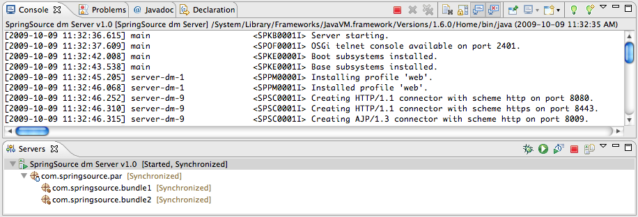

![[Note]](../images/information.gif) | Note |
|---|---|
Deploying and undeploying an application from the dm Server certainly works while the SpringSource dm Server is running, but you can also add or remove projects if the dm Server is not running. |
Currently the dm Server Tools support direct deployment of WTP Dynamic Web Projects, OSGi bundle and PAR projects to the dm Server from directly within Eclipse.
To deploy an application to the SpringSource dm Server just bring up the context menu on the configured SpringSource dm Server runtime in the Servers view and choose "Add or Remove Projects...". In the dialog, select the desired project and add it to the list of "Configured projects".

| Note |
|---|---|
Deploying and undeploying an application from the dm Server certainly works while the SpringSource dm Server is running, but you can also add or remove projects if the dm Server is not running. |
Once an application is deployed on the SpringSource dm Server the tooling support will automatically pick up any change to source files -- for example, Java and XML context files -- and refresh the deployed application on the Server.
The wait time between a change and the actual refresh can be configured in the configuration editor of the runtime. To bring up that editor, double-click on the configured SpringSource dm Server instance in the Servers view.